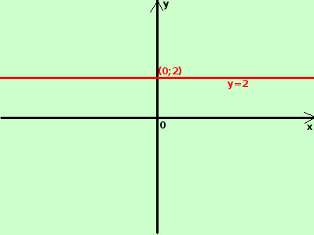

|
sviluppo y = 2  E' una funzione costante: qualunque valore attribuisco ad x la y assume sempre il valore 2 Traccio una retta parallela all'asse delle x che passi per il punto (0;2) Potrei anche considerarla una funzione razionale intere del tipo y = 2x0 essendo x a potenza zero si assume sempre che il suo valore sia uguale ad 1 a destra la sua rappresentazione grafica |